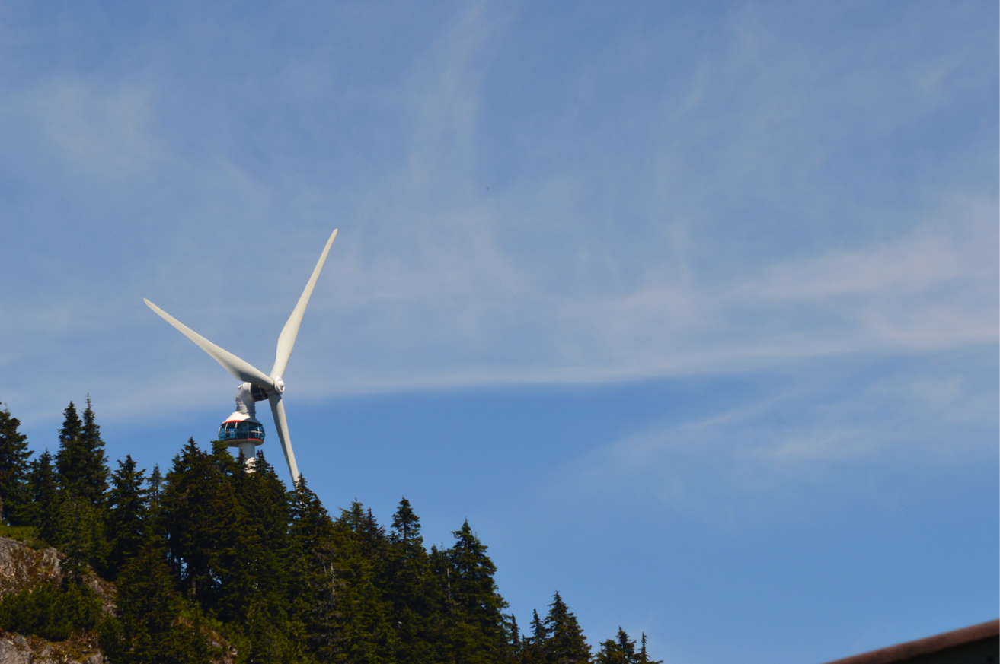

| Scientific notation | Prefix | Symbol |
|---|---|---|
| \(10^{12}\) | tera | T |
| \(10^{+9}\) | giga | G |
| \(10^{6}\) | mega | M |
| \(10^{3}\) | kilo | k |
| \(10^{2}\) | hecto | h |
| \(10^{-1}\) | deci | d |
| \(10^{-2}\) | cenit | c |
| \(10^{-3}\) | milli | m |
| \(10^{-6}\) | micro | \(\mu\) |
| \(10^{-9}\) | nano | n |
| \(10^{-12}\) | pico | p |
What is Micrometeorology?
The study of the atmosphere at “small” scales.
Learning Objectives
- Some boring housekeeping stuff
- Define key units, and conventions
- Discuss the scales relevant to micrometeorology
- Talk about applications of the discipline
iClicker Test
Are you able to access the course iClicker? If you haven’t done so yet, you can find the course here: https://join.iclicker.com/HXHO
- A - Yes
- B - No?
About these Slides
- reveal.js is a flexible HTML based alternative to power point
- Embed interactive visualizations and code blocks
- Navigating the slide deck
- Click arrows in bottom right or left/right arrows on keyboard
- Menu in bottom left has extra options + help menu
- Slides can be exported as .pdf files.
- Note that I may update slides as needed
Scientific Notation
The SI System
The SI (Système International d’Unités) is the official unit system in science. This system uses a small number of base units from which other derived units can be obtained.
| SI base unit | Symbol | Quantity |
|---|---|---|
| Meter | m | Length |
| Kilogram | Kg | Mass |
| Second | s | Time |
| Kelvin | K | Thermodynamic Temperature |
| Ampere | A | Electric current |
| Mole | mol | Amount of a substance |
| Candela | cd | Luminous intensity |
Derived Units
Derived units can be formed and related to base units by the process of multiplication or division.
- This allows the representation of more complex phenomena (e.g., atmospheric pressure, radiative flux) in “relatively” simple terms.
| SI unit | Symbol | Definition |
|---|---|---|
| Newton | N | kg m s-2 |
| Pascal | Pa | N m-2 |
| Joule | J | N m |
| Watt | W | J s-1 |
A Note: Kelvin vs. Celsius
- The unit for temperature is Kelvin (K, not \(^{\circ} K\)).
- Temperatures may be also indicated in degree Celsius ( \(^{\circ} C\) ); but differences should be in K.
- 0 K represents absolute zero, lowest possible temperature.
- 0 \(^{\circ} C\) is the freezing point of fresh water at 1 atm (mean atmospheric pressure at sea level).
- The conversion between Celsius and Kelvin is simple:
\[ T(K) = T(\deg C) + 273.15 \qquad(1)\]

Types of Data: Kelvin vs. Celsius
- Kelvin is on a ratio scale: a fixed, meaningful zero point and can only take positive values.
- Allows relative comparisons: e.g., \(100 K = 2*50 K\)
- Celsius is on an interval scale: an arbitrary zero value and can take positive or negative values.
- Prevents relative comparisons: e.g., \(100 ^{\circ} C \neq 2*50 ^{\circ} C\)
- Suggested Reading: Open Geomatics section 3.1 & 3.2 to understand the difference between types of data and measurement scales.
Programmatic Examples (iClicker)
Do you have any previous programming experience?
- A - No prior experience
- B - Some prior experience with R
- C - Some prior experience with Python
- D - Some prior experience with both R and Python
- E - No prior experience with R or Python, but some prior experience with another language
Programmatic Examples
These code blocks demonstrate a simple unit conversion in R and Python respectively. You can use syzygy to try them out.
R Code
Python Code
# Converts between Celsius and Kelvin
import numpy as np
def TConvert(Temp,uIn="C"):
if uIn == "C":
return(Temp+273.15)
elif uIn == "K":
return(Temp-273.15)
else:
raise ValueError('Invalid unit')
# Celsius to Kelvin
TempC = np.array([-10,0,10])
TConvert(TempC)array([263.15, 273.15, 283.15])array([-73.15, 26.85, 126.85])Wind References
- In Meteorology: horizontal (2D) winds are named after the direction from which the air is moving.

Wind References
- In reality, wind is a vector consisting of three components (u, v, & w). They can be referenced to either:
- Fixed cartesian coordinates (x, y, & z)
- Mean flow: u is aligned with the mean flow, v (horizontal) and w (vertical) are orthogonal u
What is Micrometeorology


Relevant Scales
| Scale | Spatial Extent |
|---|---|
| Micro | 10-2 to 103 m |
| Local | 102 to 5 x 104 m |
| Meso | 104 to 2 x 105 m |
| Macro | 105 to 108 m |
Relevant Scales

Weather vs Climate?
What is the difference between weather & climate?
Micro-scale Weather vs Climate?
Micrometeorology focuses on short-term fluctuations of atmospheric variables (up to one hour) and the detailed physical processes (e.g. turbulence) that drive exchange at small scales.
Microclimatology deals with long-term integral effects (from hours to decades) namely, the average and variability of specific climates near the surface with respect to different geographic settings.
Boundary layers
In a fluid, a boundary layer refers to the region immediately above a surface where flow is significantly influenced by:
- Energy and mass exchange
- Surface friction.
Fluid Flow
Flow can be laminar (orderly) or turbulent (random).
- When flow interacts with a surface, it slows and generates turbulent motions.

What is a boundary layer?
Photo: Visualization of a boundary layer in a wind tunnel (M. A. Carper, Saint Anthony Falls Laboratory, University of Minnesota).
The Atmospheric Boundary Layer
The atmospheric boundary layer (ABL) refers to the lowest 300-3000 m of the troposphere. The ABL is controlled by the roughness, thermal mixing and the injections of moisture and pollutants from the underlying surface.
The ABL over Vancouver (Photo: A. Christen)
The Atmospheric Boundary Layer
- The ABL reacts within several hours (< 1 day) to changes at the surface.
- We measure a diurnal cycle of temperature, humidity, wind and air pollutants in the ABL.
- The free atmosphere above is less tied to the diurnal cycle; requires less frequent measurement
The Free Atmosphere (iClicker)
The free atmosphere refers to the region of the atmosphere farther away from the Earth’s surface that is less directly influenced by short time-scale processes at the surface, and is therefore not the primary focus of this course.
- A - True
- B - False
Applications
- Global climate change
- Clean energy
- Food and water resources
- Air pollution and industry
Climate Change
Rising CO2 concentrations
Climate Change
Sources
Sinks
The breathing of the biosphere

Global climate change
Knowledge on micrometeorology and climatology help:
- Determine greenhouse-gas emissions and uptake between.
- Study climate-surface feedbacks (e.g. thawing permafrost).
- Determine the melt rate and mass balance of ice-sheets and glaciers.
Food security
Food security is a major challenge of our century.
- Microclimates play a key role in understanding agriculture
Food and Water Resources
Food requires water for growth, in many places the availability of water is the limiting factor.
Food and Water Resources
Warmer temperatures mean even when the rains come, evaporation can wick much of the moisture away.
Food and Water Resources
Knowledge on micrometeorology and climatology help:
- Develop strategies to use water efficiency (soil moisture, evapotranspiration).
- Quantify and model local and regional rates of evapotranspiration.
- To predict frost and protect crops properly from frost.
- To manage wind erosion and sheltering.
- To efficiently plan agricultural operations (seeding, spraying, burning).
Clean Energy
Energy is a central need of growing populations and economies. How can we secure energy without harming our climate system?
- Clean energy production, along with efficient distribution and use of energy, are key tasks of moving into a more sustainable 21st century.
Clean Energy
Knowledge on micrometeorology and climatology helps:
- Maximize use of renewable energies (wind, solar).
- Optimize thermal climate and energetics of buildings.
- Calculate wind loading of buildings and structures.

Coming Up Next?
A deep dive into energy and mass balances.
- Next week we’ll start taking an in-depth look at the processes governing ecosystem scale fluxes of energy and mass.